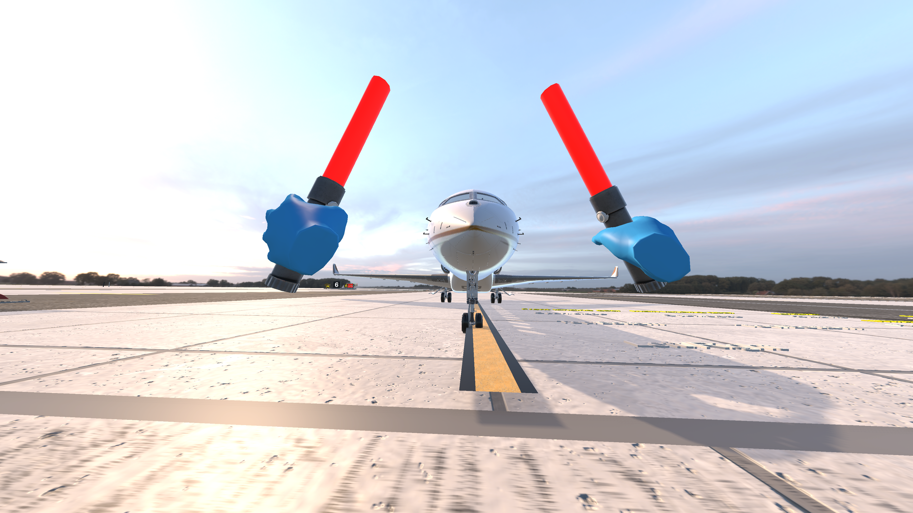
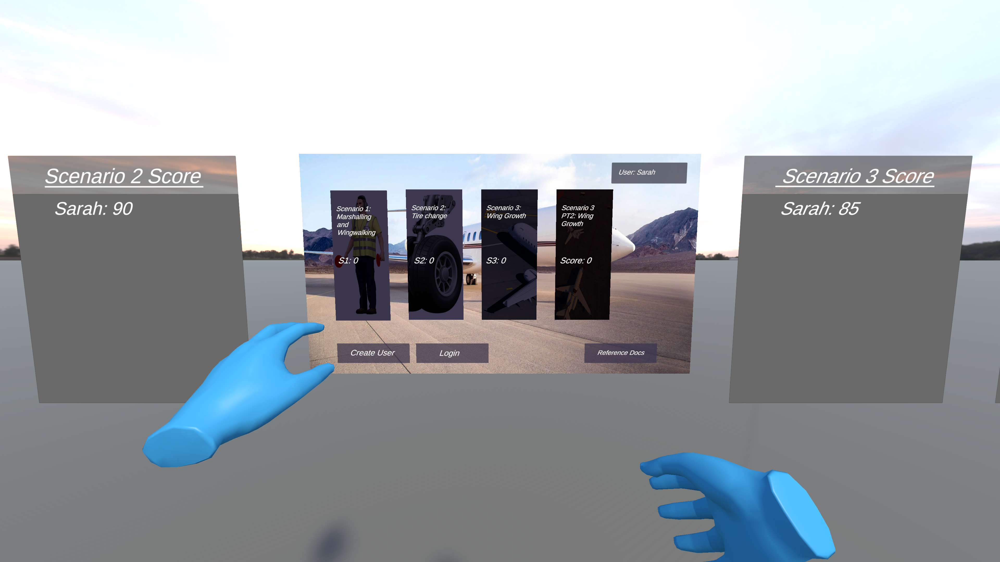

Marshalling Scenario
The Marshalling scenario is the most common ground operation event — the user guides an incoming aircraft to a designated parking spot using standard marshalling signals.
I was responsible for the full implementation of this scenario, collaborating closely with a teammate on scene design and working iteratively with both the faculty sponsor and NetJets to ensure the simulation accurately reflected real-world procedures.
Plane Movement System
I scripted the aircraft's response to marshalling signals given by the user, mapping recognized hand signals to the appropriate aircraft movement — speed changes, turns, and full stop.
The plane's behavior needed to feel convincing without being forgiving, so timing and responsiveness were tuned extensively against sponsor feedback to match what a real marshaller would experience.
Dynamic Hazards
To simulate realistic ground operation conditions, I implemented randomized ground vehicle movement and random aircraft path deviation.
These introduce genuine unpredictability into each run, challenging the user to stay attentive and reflect the kinds of unexpected situations that occur during live marshalling operations.
TPC Briefing System
I added a Threat and Error Management (TPC) briefing step that spawns UI at the start of the scenario showing how many threats the marshaller identified prior to guiding the aircraft in.
This reinforces procedural compliance and mirrors the pre-operation checks required in real NetJets ground handling.

Figure 1: Marshalling scenario - user guides incoming aircraft using hand signals

Figure 2: Main menu - user login connected to SQLite backend with scenario selection
Main Menu & Backend Integration
I built the main menu from scratch and integrated it with the SQLite backend, handling user account creation, login authentication, and session management.
This was one of the first systems completed on the project, providing a foundation for the rest of the team to build against.
Persistent Scoring System
User scores needed to survive scene transitions — a common Unity pitfall. I implemented a persistent scoring system using a DontDestroyOnLoad manager that carries score state across scenes without data loss, then writes final results to the SQLite database on scenario completion.
Leaderboards
I added four scrollable leaderboards to the main menu, one for each scenario, querying the backend to surface the highest-scoring users per scenario.
This gave the simulation a competitive element that motivated users to improve their procedural compliance scores across training sessions.
Sponsor Feedback Integration
Both the faculty team and the NetJets sponsor reviewed the main menu and backend systems during regular milestone reviews. Feedback from NetJets focused on ensuring login flow and score storage matched what would be needed for real deployment; this directly shaped how user records were structured in the database.
Fail States, UI Loop & Tutorialization
I implemented all fail states in the Marshalling scenario as specified by the NetJets sponsor — covering incorrect signal sequences, missed hazard responses, and procedural violations.
Each fail state triggers appropriate feedback UI and cleanly returns the user to the scenario entry point, ensuring the loop never dead-ends.
Scenario UI Flow
I built the full UI loop connecting the Marshalling scenario back to the main menu, including results screens, score submission, and smooth scene transitions.
The goal was a seamless end-to-end experience where a user could complete a full run — from login to scenario to results — without any rough edges or unclear next steps.
Training Mode & Tutorialization
I tutorialized the entire Marshalling scenario for first-time VR users, adding contextual guiding text and UI overlays that walk the user through each step of the procedure.
The training mode is designed to be self-sufficient — a user with no prior VR experience and no prior knowledge of marshalling procedures should be able to complete a full run without external instruction.
Evaluation mode strips all guides and scores the user strictly against official NetJets procedure compliance.
Lighting & Environment Realism
I implemented realistic lighting across the Marshalling scene to reinforce environmental immersion — one of the project's identified risks was building a simulation that felt too artificial to produce genuine training transfer.
Lighting was iterated on throughout development and received positive feedback from the sponsor as a contributor to the overall realism of the experience.
Results and Impact
* Delivered a feature-complete Marshalling scenario — including plane movement, dynamic hazards, fail states, TPC briefing, training mode, and full UI loop — that was demonstrated live in front of the NetJets sponsor team during the beta milestone.
* The persistent scoring system and SQLite backend integration provided a reliable data layer used across all three scenarios, ensuring no score data was lost across sessions or scene transitions.
* Four scrollable leaderboards added a competitive training dynamic, giving users a clear performance benchmark and incentivizing repeated practice to improve procedural compliance scores.
* Tutorialization of the full Marshalling scenario reduced the onboarding burden for first-time VR users, making the simulation accessible to crew members regardless of their prior VR experience.
* The NetJets sponsor noted the quality and completeness of the project at beta, and the faculty team cited consistently clean, well-resolved code with bugs identified and fixed rapidly throughout development.